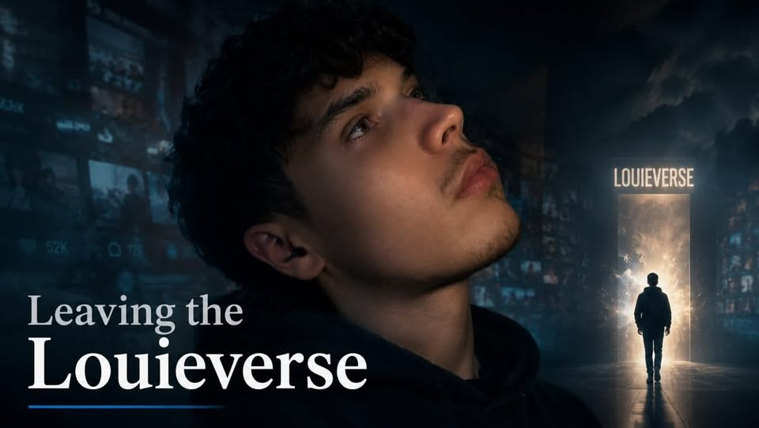

Framemogger Leaves The Louieverse

Add news image hereFramemogger has suddenly left the Louieverse without giving a clear explanation, causing confusion across the timeline. After disappearing from the main structure, he has reportedly started going by the new alias “Zygomatics”. Even more suspiciously, he has allegedly tried to get information from Abdi about the newest Fatih and Callum’s Fitness lore, suggesting he may still be watching the Louieverse from the outside despite abandoning his original founder role.
Ranking Method
This ranking is mostly about lore importance, not just looks or chad stats. Founders, OG members, major conflict figures, loyal defenders, and characters who changed the timeline rank higher.